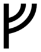
Feoh byþ frofur fira gehwylcum;
sceal ðeah manna gehwylc miclun hyt dælan
gif he wile for drihtne domes hleotan.
Wealth is a comforting fire for all;
shall though all men greatly it dole
if he bargains for The Lord at doom's lots.
Ur byþ anmod ond oferhyrned,
felafrecne deor, feohteþ mid hornum
mære morstapa; þæt is modig wuht.
Aurochs is a bold and large-horned,
very dangerous animal, fights with horns,
nightmare moor-roamer; it is a mighty spirit.
Ðorn byþ ðearle scearp; ðegna gehwylcum
anfeng ys yfyl, ungemetum reþe
manna gehwelcum, ðe him mid resteð.
Thorn is very sharp; for thanes every one
it's defense is evil, immeasurable wrath
to all men, if in them he stops.
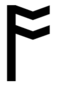
Os byþ ordfruma ælere spræce,
wisdomes wraþu ond witena frofur
and eorla gehwam eadnys ond tohiht.
Rad byþ on recyde rinca gehwylcum
sefte ond swiþhwæt, ðamðe sitteþ on ufan
meare mægenheardum ofer milpaþas.
Cen byþ cwicera gehwam, cuþ on fyre
blac ond beorhtlic, byrneþ oftust
ðær hi æþelingas inne restaþ.
Gyfu gumena byþ gleng and herenys,
wraþu and wyrþscype and wræcna gehwam
ar and ætwist, ðe byþ oþra leas.
 Wenne bruceþ, ðe can weana lyt
sares and sorge and him sylfa hæfþ
blæd and blysse and eac byrga geniht.
Wenne bruceþ, ðe can weana lyt
sares and sorge and him sylfa hæfþ
blæd and blysse and eac byrga geniht.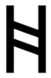
Hægl byþ hwitust corna; hwyrft hit of heofones lyfte,
wealcaþ hit windes scura; weorþeþ hit to wætere syððan.
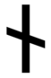
Nyd byþ nearu on breostan; weorþeþ hi þeah oft niþa bearnum
to helpe and to hæle gehwæþre, gif hi his hlystaþ æror.
Is byþ ofereald, ungemetum slidor,
glisnaþ glæshluttur gimmum gelicust,
flor forste geworuht, fæger ansyne.
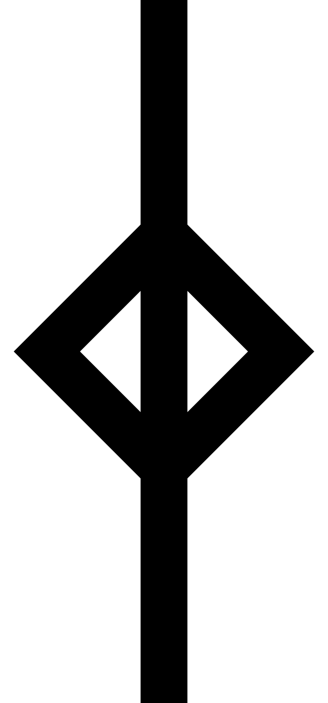
Ger byÞ gumena hiht, ðonne God læteþ,
halig heofones cyning, hrusan syllan
beorhte bleda beornum ond ðearfum.
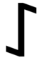
Eoh byþ utan unsmeþe treow,
heard hrusan fæst, hyrde fyres,
wyrtrumun underwreþyd, wyn on eþle.
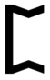
Peorð byþ symble plega and hlehter
wlancum [on middum], ðar wigan sittaþ
on beorsele bliþe ætsomne.
 Eolh-secg eard hæfþ oftust on fenne
wexeð on wature, wundaþ grimme,
blode breneð beorna gehwylcne
ðe him ænigne onfeng gedeþ.
Eolh-secg eard hæfþ oftust on fenne
wexeð on wature, wundaþ grimme,
blode breneð beorna gehwylcne
ðe him ænigne onfeng gedeþ.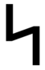
Sigel semannum symble biþ on hihte,
ðonne hi hine feriaþ ofer fisces beþ,
oþ hi brimhengest bringeþ to lande.
Tir biþ tacna sum, healdeð trywa wel
wiþ æþelingas; a biþ on færylde
ofer nihta genipu, næfre swiceþ.
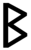
Beorc byþ bleda leas, bereþ efne swa ðeah
tanas butan tudder, biþ on telgum wlitig,
heah on helme hrysted fægere,
geloden leafum, lyfte getenge.
Eh byþ for eorlum æþelinga wyn,
hors hofum wlanc, ðær him hæleþ ymb[e]
welege on wicgum wrixlaþ spræce
and biþ unstyllum æfre frofur.
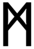
Man byþ on myrgþe his magan leof:
sceal þeah anra gehwylc oðrum swican,
forðum drihten wyle dome sine
þæt earme flæsc eorþan betæcan.
 Lagu byþ leodum langsum geþuht,
gif hi sculun neþan on nacan tealtum
and hi sæyþa swyþe bregaþ
and se brimhengest bridles ne gym[eð].
Lagu byþ leodum langsum geþuht,
gif hi sculun neþan on nacan tealtum
and hi sæyþa swyþe bregaþ
and se brimhengest bridles ne gym[eð].
Ing wæs ærest mid East-Denum
gesewen secgun, oþ he siððan est
ofer wæg gewat; wæn æfter ran;
ðus Heardingas ðone hæle nemdun.
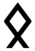
Eþel byþ oferleof æghwylcum men,
gif he mot ðær rihtes and gerysena on
brucan on bolde bleadum oftast.
Dæg byþ drihtnes sond, deore mannum,
mære metodes leoht, myrgþ and tohiht
eadgum and earmum, eallum brice.
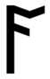
Ac byþ on eorþan elda bearnum
flæsces fodor, fereþ gelome
ofer ganotes bæþ; garsecg fandaþ
hwæþer ac hæbbe æþele treowe.
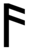
Æsc biþ oferheah, eldum dyre
stiþ on staþule, stede rihte hylt,
ðeah him feohtan on firas monige.
Yr byþ æþelinga and eorla gehwæs
wyn and wyrþmynd, byþ on wicge fæger,
fæstlic on færelde, fyrdgeatewa sum.
Iar byþ eafix and ðeah a bruceþ
fodres on foldan, hafaþ fægerne eard
wætre beworpen, ðær he wynnum leofaþ.
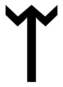
Ear byþ egle eorla gehwylcun,
ðonn[e] fæstlice flæsc onginneþ,
hraw colian, hrusan ceosan
blac to gebeddan; bleda gedreosaþ,
wynna gewitaþ, wera geswicaþ.